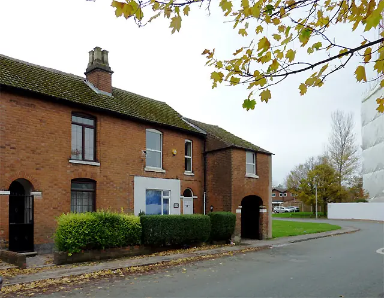

Recent cases
- Mattox Street, Wednesfield. Wolverhampton Crown Court heard in October 2026 that police found 250 to 300 plants across two of three bedrooms and the loft of a house in August. The electricity was being abstracted. The court ordered the hydroponic equipment destroyed.
- Peverill Road, Springvale, 6 October 2026. Around 200 plants were found in a house when officers executed a warrant.
- The Express and Star also reported finds in Colliery Road in Eastfields, in Low Hill, and in Riley Street, Willenhall.
The pattern is clear: residential houses, multiple rooms and the loft, and electricity theft. That means electrical make-safe is almost always the first job.
What Wolverhampton landlords should know
- Lofts. Several local finds involved the loft. Check loft insulation for damage, mould and needles before anyone works up there, and check the joists where heavy equipment was hung.
- Licensing. Mandatory HMO licensing applies across the city for properties let to five or more people from two or more households. Check the council's HMO licensing page for any current local schemes before re-letting.
- Court dates. Where there is a prosecution, it is likely to be at Wolverhampton Crown Court. Your insurer may ask for the crime reference number and any outcome. Keep a note.
The first steps
- Get the crime reference number and confirm the property has been released.
- Call 105 or your supplier about the meter. Do not switch anything on.
- Tell your insurer and ask whether they want to send a loss adjuster.
- Photograph everything before it is moved.
- Then arrange the clean-up, electrics and repairs, in that order.
Our first 48 hours guide goes through each step in more detail.
Is it actually in the city?
The WV postcode area reaches well beyond the City of Wolverhampton. WV5 (Wombourne) and WV8 (Codsall) are in South Staffordshire. WV12 and WV13 (Willenhall) are in Walsall. WV14 (Bilston) is in the city. Licensing, environmental health and building control depend on the council, so check which one before you call anyone about the property.
Older terraces: what to look for
Large parts of Blakenhall, Whitmore Reans, Penn Fields and All Saints are late Victorian and Edwardian terraces. These houses have solid walls, suspended timber floors and lath-and-plaster in places. A grow that ran for months in one of them tends to cause:
- Damp in solid walls that takes weeks to dry out, even with dehumidifiers running
- Soft or rotten floor joists under rooms where water trays and pots stood
- Damaged ceilings where ducting was pushed through to the loft
- Fixings in old plaster: staples and screws that pull chunks out when the sheeting comes down
A good specialist will tell you which of these they found and put each one on the quote as a separate line. That is what your insurer will want to see.
The loft is a job of its own
Several local finds used the loft. Before anyone goes up:
- Check the ceiling below for staining or sagging. Wet insulation is heavy.
- Assume there may be needles or blades in the insulation, and say so to the firm.
- Ask for photos of the joists where lamps, fans and carbon filters were hung, before and after.
- Expect wet or contaminated insulation to be removed and replaced, not cleaned.
Electricity: why it comes first
Abstracting electricity is a separate offence from growing cannabis, and the Wednesfield case in this page's sources involved exactly that. A bypass can leave cables live even with the consumer unit switched off. Call 105 and report it, keep everyone out of the meter cupboard, and have a registered electrician make safe and test. Our electrical make-safe page explains what that involves.
Who to contact in Wolverhampton
- West Midlands Police: 101, and ask for the crime reference number.
- 105 for the meter and the supply. The network operator is National Grid Electricity Distribution.
- City of Wolverhampton Council: private sector housing and HMO licensing.
- Stay Energy Safe if you want to report suspected energy theft at another address anonymously.
Questions landlords ask
The police have finished but the meter has been bypassed. Who fixes it?
The meter belongs to the supplier and the incoming cable to the network operator. Call 105 or your supplier and tell them it was a cannabis farm. Your own electrician deals with everything after the meter, including making safe and testing.
Do you cover Bilston, Wednesfield and Tettenhall?
Yes. They are all within the City of Wolverhampton. We also look for specialists for WV postcodes in South Staffordshire and Walsall.
Is wet loft insulation a cleaning job or a repair?
Usually a repair. Wet or contaminated insulation is removed and replaced. Make sure it is a separate line on the quote so your insurer can see it.
What we can arrange in Wolverhampton
Guides for Wolverhampton landlords
Other areas: Birmingham, Sutton Coldfield, Solihull, Coventry, Walsall, Dudley, Sandwell, West Bromwich.